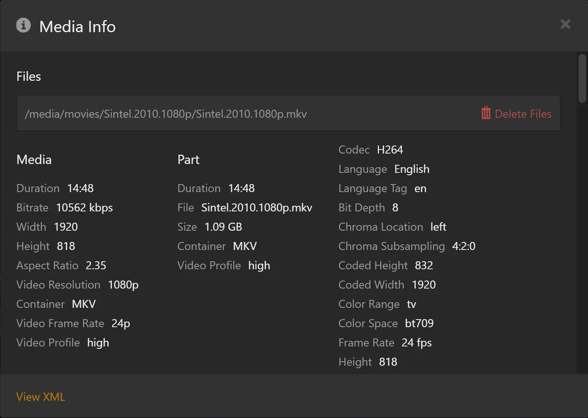

Bawa riwayat tontonan kamu ke rex
rex dimulai tanpa riwayat tontonan. rex bisa menyalin judul yang sudah ditonton, posisi lanjut menonton, dan rating bintang dari server Plex lain. Judul yang sudah ditonton tetap ditandai sudah ditonton. Judul yang ditonton sebagian kembali ke Continue Watching. Acara TV dan musim dihitung ulang episodenya.
Jalankan sekali dari komputer mana pun di rumah. Setiap orang yang memakai rex bisa mengimpor riwayat tontonannya sendiri.
Sebelum kamu mulai
1. Salin alamat server lama kamu
-
Buka app.plex.tv di browser dan masuk sebagai kamu sendiri, akun yang riwayatnya ingin kamu ambil.
-
Pilih server lama kamu dan buka film apa pun di server itu.
-
Klik ⋯ (More), lalu Get Info.
-
Klik View XML di pojok kiri bawah kotak Media Info yang terbuka. Tab baru akan terbuka, penuh dengan teks.

-
Salin seluruh alamat dari address bar tab itu.
Bentuknya seperti ini, semuanya dalam satu baris, dan diakhiri dengan X-Plex-Token= diikuti sebuah kode:
https://192-168-1-5.0123456789abcdef.plex.direct:32400/library/metadata/1234?checkFiles=1&includeAllConcerts=1&X-Plex-Token=AbCdEfGh1234567890xyKode itu adalah Plex token untuk server tersebut. Fungsinya seperti password untuk akun Plex kamu, jadi jangan pernah menempelkannya di Discord, postingan support, atau screenshot.
Tidak ada View XML di langkah 4? Plex Web hanya menampilkannya untuk server yang kamu miliki, jadi server yang dibagikan orang lain ke kamu tidak punya opsi ini. Gunakan developer tools browser di server lama kamu, seperti di plex.direct). Klik kanan request itu dan salin alamatnya: Copy, Copy URL di Chrome dan Edge, Copy Value, Copy URL di Firefox. Alamat itulah yang kamu butuhkan. Alamat itu berisi X-Plex-Token= dan kode di dalamnya, di antara bagian X-Plex- lainnya: tempelkan semuanya.
2. Ambil token kamu di rex
Karena rex dibagikan ke kamu, Get Info di rex tidak punya View XML. Plex Web hanya menampilkannya untuk pemilik server. Jadi, ambil token dari browser kamu, seperti yang dikirim app.plex.tv ke rex:
- Di app.plex.tv, masih login dengan akun kamu, buka developer tools browser: tekan F12, atau ⌥ ⌘ I di Mac. Di Safari, aktifkan dulu Show features for web developers di Settings, Advanced.
- Buka tab Network dan ketik
X-Plex-Tokendi kotak filter-nya. - Buka film apa saja di server rex. Daftar akan terisi dengan request.
- Klik salah satu yang alamatnya mengarah ke rex: kalau pakai rex-direct, alamatnya memuat
rex-direct.debridmediamanager.com, atau alamat HTTPS yang kamu atur sendiri. Jangan yang mengarah keplex.tv. - Salin nilai
X-Plex-Token: Chrome dan Edge menampilkannya di bawah Payload, Firefox di bawah Request. Atau salin alamat request-nya, lalu ambil bagian setelahX-Plex-Token=sampai ketemu&berikutnya.
Kode ini berbeda dengan yang ada di langkah 1. Setiap server memberi akun kamu kode sendiri. rex memakai kode ini untuk tahu riwayat tontonan siapa yang sedang ia catat.
3. Jalankan impor
Di komputer di rumah, jalankan ini dengan dua nilai kamu yang sudah ditempel. 192.168.1.20 adalah IP LAN rex, seperti di panduan instalasi: ganti dengan IP kamu.
curl -d "ADDRESS-FROM-STEP-1" "http://192.168.1.20:32400/rex/import-watched?X-Plex-Token=TOKEN-FROM-STEP-2"Di Windows, buka PowerShell dan ketik curl.exe, bukan curl. Biarkan kedua pasang tanda kutip ganda: alamat dari langkah 1 mengandung karakter &, yang akan merusak perintah jika tanda kutipnya dihapus.
Prosesnya butuh beberapa detik, lebih lama untuk pustaka besar: rex membaca setiap film dan episode di server lama.
Yang akan kamu lihat. Satu baris seperti ini:
{"watched":412,"inProgress":7,"rated":38,"alreadyHere":0,"notInRex":55}Buka lagi aplikasi Plex kamu (atau muat ulang app.plex.tv) untuk melihatnya.
Jalankan lagi kapan saja
Menjalankannya lagi tidak mengubah apa pun yang sudah kamu punya, jadi jalankan kapan saja ketika lebih banyak bagian pustakamu sudah masuk. Menjalankannya lagi tepat setelah yang pertama akan menampilkan "watched":0 dan yang sebelumnya di bawah alreadyHere.
Yang tidak ikut disalin
- Riwayat orang lain di server lama Anda. Setiap orang menjalankan impor dengan dua token mereka sendiri.
- Daftar riwayat putar server, playlist, dan koleksi.
- Rating bintang untuk seluruh serial dan season. Rating film dan episode ikut disalin.
- Judul di library yang agent-nya di server lama bukan Plex Movie atau Plex TV Series (agent lama, seperti Plex Movie (Legacy) dan TheTVDB). rex mencari judul berdasarkan id yang diberikan agent Plex saat ini, sedangkan agent lama memberikan id yang berbeda, jadi judul-judul ini dihitung di
notInRex.
Jika tidak berhasil
Masih buntu? Tanyakan di forum rex-support di Discord. Cara minta bantuan menjelaskan apa saja yang perlu disertakan.